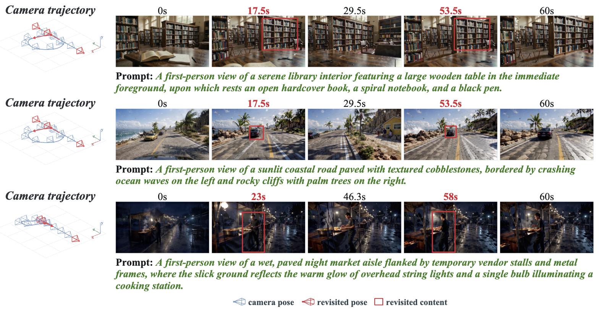
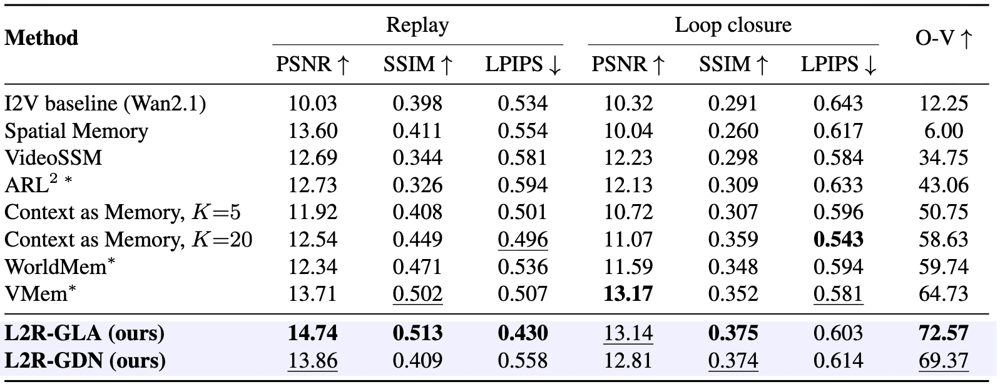
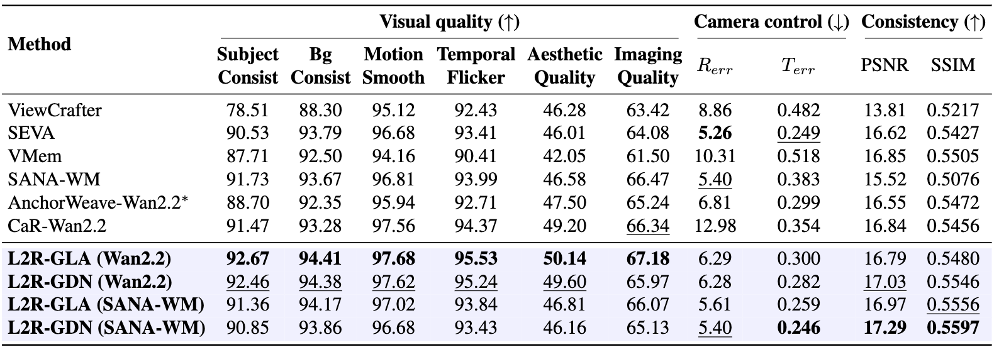

Demo #1: Turn 180 degrees to the left and then turn back.
We introduce Learning-to-Retrieve (L2R), which can generate consistent videos without external memory modules or 3D reconstruction pipelines. Red boxes mark content observed from matched camera poses separated by a long temporal interval, illustrating that L2R preserves scene identity when the camera revisits a previously observed region.

Existing video world models often rely on external memory systems (e.g., query modules, camera FoV overlap, or 3D surfel) to mitigate scene drift during long-horizon generation by explicitly retrieving previously observed content. However, these auxiliary memory mechanisms operate independently of the model's internal generative dynamics, preventing the model from autonomously learning when and what historical information to retrieve.
Based on this concept, we introduce the Learning-to-Retrieve (L2R) method, which leverages the model's persistent internal state to store historical context. A retrieval gate, controlled by the camera trajectory, selectively accesses relevant historical information from this state to determine "what to retrieve," while a retrieval trigger determines "when to retrieve." We utilize 3D re-visibility signals to supervise the trigger: retrieval is activated when previously observed content re-enters the current field of view, whereas the existing context is maintained otherwise. These components work in concert to enable the model to autonomously learn retrieval behaviors and integrate relevant historical observations into the generation process without requiring a separate retrieval pathway.
Demo #1: Turn 180 degrees to the left and then turn back.
Demo #2: Turn 180 degrees to the left and then turn back.
Demo #3: (After a teddy bear is inserted into the input image) Turn 90 degrees to the left, then turn back.
Demo #4: (After a teddy bear is inserted into the input image) Turn 45 degrees to the right, then turn back.


@article{hu2026l2r,
title={Learning to Retrieve: Internalizing Memory Retrieval for Video World Models},
author={Hu, JiaKui and Chen, Tailai and Pan, Yuqi and Qiu, Xuerui and Liu, Jialun and Cao, Xiao and Zhu, Zhenxin and Chen, Guang and Ye, Hangjun and Wang, Bing and Lu, Yanye},
journal={arXiv preprint arXiv:2610.11444},
year={2026}
}